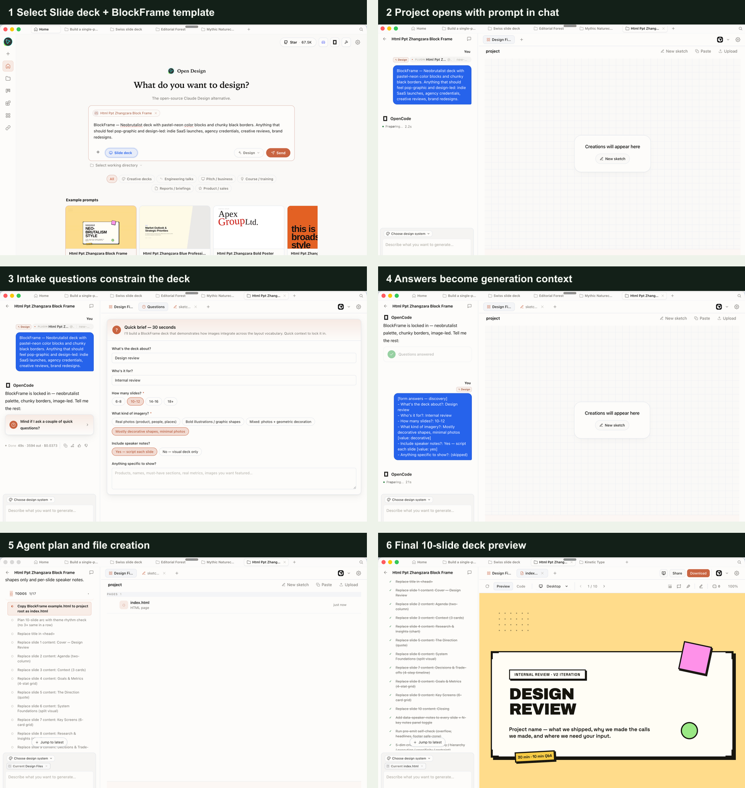
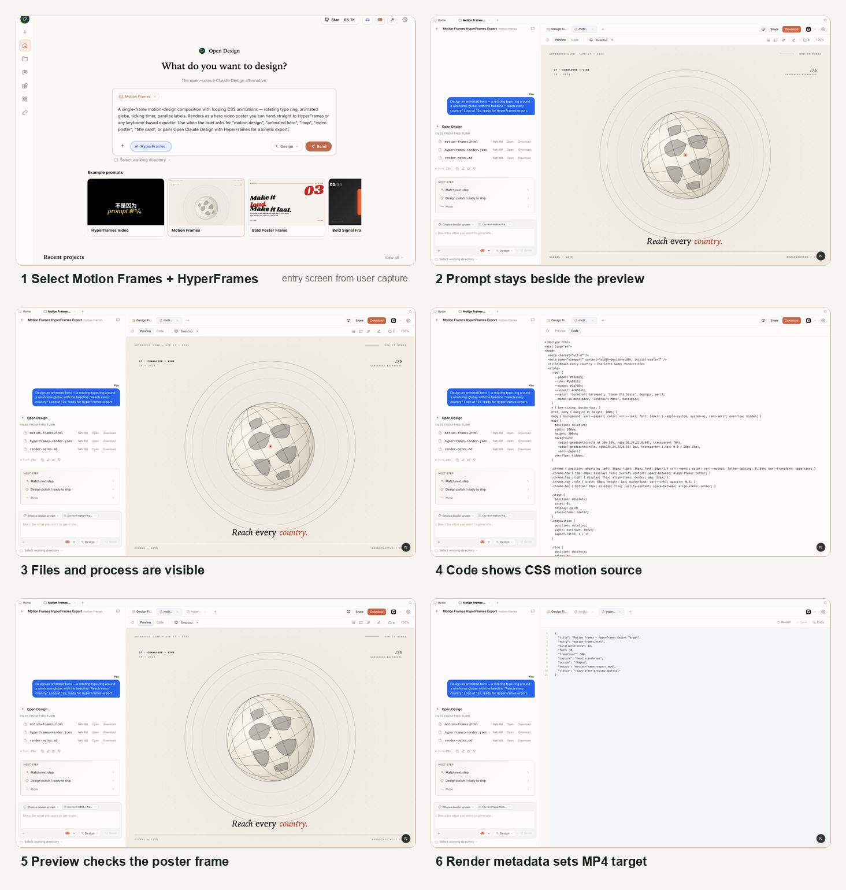
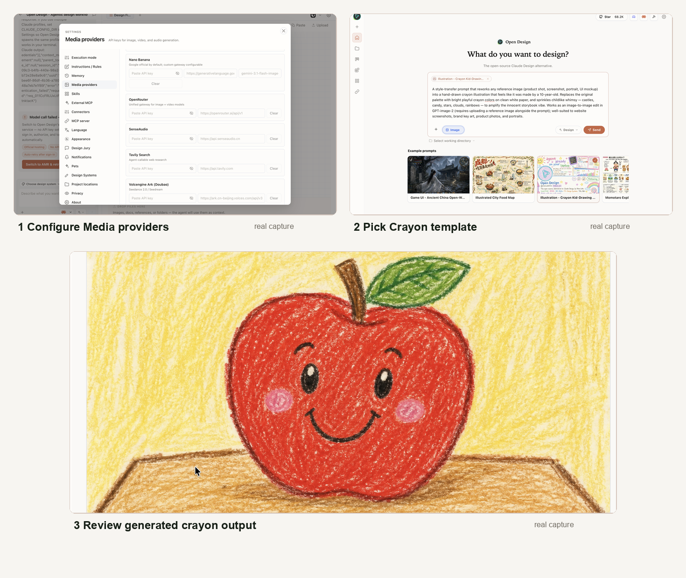
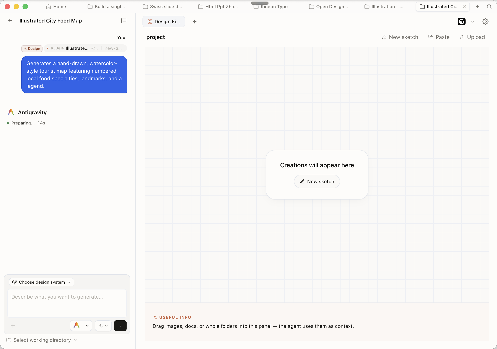

Chapter
07
Decks, Motion, and Images
Presentations, HyperFrames HTML-to-MP4, and AI images
The same brand contract that styles a prototype also styles a deck, a motion graphic, and an image, so one system covers every output format.
7.1 Presentation Decks
Generate a themed deck and cover the available deck styles
Prototypes live in a browser. Decks go to a boardroom, a PDF inbox, or a PowerPoint review. Open Design's deck artifacts are branded, slide-structured HTML documents that export to PPTX, PDF, and five other formats without leaving the four-beat loop you already know.
As of June 2026, Open Design ships 15 deck templates with 36 theme variants — from the default
magazine-style layout (called guizang-ppt, featuring a WebGL hero
and checklist slides) to the Swiss International grid-anchored style with
monochrome accents. The same DESIGN.md token set that colors a prototype also colors a deck:
--od-color-primary, --od-color-accent, and --od-type-sans
all carry across.
Generate a BlockFrame Deck
The walkthrough below follows a real deck creation flow in Open Design. Instead of starting from a blank canvas, the user chooses Slide deck, selects the Html Ppt Zhangzara Block Frame example prompt, answers the deck intake questions, and lets the agent build a 10-slide internal design-review deck. The important detail is the process: deck mode narrows the agent's job before generation begins.
Start on the Home surface and choose a deck template before sending the prompt. In this example, the selected prompt is BlockFrame:
BlockFrame — Neobrutalist deck with pastel-neon color blocks and chunky
black borders. Anything that should feel pop-graphic and design-led:
indie SaaS launches, agency credentials, creative reviews, brand redesigns.Let the intake form constrain the deck. Open Design asks what the deck is about, who it is for, how many slides it should contain, what kind of imagery it should use, and whether to include speaker notes. This is not decoration: those answers become generation context.
Answer the brief in the chat. In the captured run, the deck is an internal Design review, aimed at an internal review audience, with 10-12 slides, mostly decorative shapes and minimal photos, and script-like speaker notes under each slide.
Watch the generation plan and final preview. The agent copies the BlockFrame example into the project, replaces each slide's content, generates a 10-slide deck, and opens the result in the deck preview. The toolbar shows the deck counter, and the final screenshot shows slide 1 of 10, titled Design Review.

Deck Styles and Export Formats
Deck style is a first-class prompt parameter, not a post-generation setting.
State it up front or the agent picks guizang-ppt by default.
| Format | Use case | Notes |
|---|---|---|
| PPTX | PowerPoint review, stakeholder handoff | Agent-driven; fallback to PDF→slide if slides.json absent |
| HTML (inlined) | Browser presentation, link-share | Self-contained single file; all fonts and assets inlined |
| Print, email | Print-aware layout; page breaks per slide | |
| ZIP | Archive, asset bundle | HTML + extracted assets; editable in any editor |
| Markdown | Version control, review comments | Slide content as Markdown sections; no layout preserved |
| MP4 | Social media, async presentation | Requires HyperFrames render path (see Section 7.2) |
Name the deck style in every prompt. Even "use the default style" is better than silence, because it prevents the agent from switching styles across iterations.
Troubleshooting Deck Generation
Deck generation failures are usually prompt-level, not system-level. The agent over-generates text on slides when the prompt is open-ended, and under-specifies layout when the slide count is left implicit. Below are the common failure patterns and their fixes.
| Symptom | Cause | Fix |
|---|---|---|
| Slides overflow with bullet points | Prompt did not constrain slide density | Add "max 5 words per bullet, max 4 bullets per slide" to the prompt |
| PPTX opens but slides are not individually editable | Skill took the PDF-to-page-to-slide fallback path (no slides.json emitted) |
Iterate with: "Ensure the output includes a slides.json structure for native PPTX export" |
| Brand colors are correct in preview but wrong in PPTX | PPTX export serializes colors from the slide CSS; theme was not injected before export | Re-export after confirming DESIGN.md is selected as the active brand in the project |
| Deck preview blank or shows loading spinner indefinitely | Daemon SSE connection dropped mid-generation | Check daemon health at localhost:7456/health; restart if unresponsive |
7.2 HyperFrames Motion Graphics
Generate an HTML-to-MP4 motion graphic and understand the render path
Most AI design tools generate static artifacts. Open Design generates motion. The mechanism is HyperFrames (Apache-2.0) — a headless Chrome plus FFmpeg pipeline that renders HTML and CSS animations, GSAP timelines, Lottie files, and Three.js scenes into deterministic, frame-accurate MP4 video. One brand, many surfaces includes video.
HyperFrames is integrated as a first-class citizen in Open Design.
The agent skill that produces motion artifacts emits HTML with data-start,
data-duration, and data-track-index attributes on each scene block,
plus a paused GSAP timeline assigned to window.__timelines.
HyperFrames seeks the timeline frame by frame during capture — no real-time playback required.
As of June 2026, Open Design ships 11 bundled HyperFrames video templates alongside 39 Seedance video prompts. Animation adapters include GSAP, CSS animations, Lottie, Three.js, Anime.js, WAAPI, and custom adapters — giving the agent a broad vocabulary for motion.
Why HyperFrames Instead of Remotion
The competing motion-from-code tool in the agent ecosystem is Remotion, which is React-based. HyperFrames uses plain HTML, CSS, and JavaScript. For AI-generated output, that distinction matters: LLMs produce more reliable plain-HTML motion than they produce React component trees, because HTML/CSS/JS occupies a far larger share of training data than React-specific animation patterns.
HyperFrames is the most differentiated artifact type in Open Design. I haven't found another agent-native pipeline that renders branded motion from plain HTML. Most hosted tools give you a template library; this gives you a renderer you drive with prompts. The caveat is real: render times make it a deliberate-use feature, not a rapid-fire one. Don't run it on every iteration — use it once the HTML prototype is close to final.
Scene Structure
When you ask the agent to build a motion artifact, the emitted HTML follows a predictable structure. Understanding it helps you write better prompts and debug motion that doesn't render correctly.
<!-- Scene with data attributes for timing -->
<div data-start="2.0"
data-duration="3.5"
data-track-index="0"
class="scene-content">
<!-- Animation elements here -->
</div>
<!-- GSAP timeline: paused, seekable -->
<script>
const timeline = gsap.timeline({ paused: true });
// animation definitions
window.__timelines = [timeline];
</script>
The paused: true is mandatory. HyperFrames cannot seek a playing timeline —
it steps frame by frame and needs to control playback position directly. If the skill emits a
timeline that auto-plays, the render will produce duplicate or blurred frames.
Animation Adapters
HyperFrames supports six animation methods out of the box: GSAP, CSS animations (keyframes), Lottie (JSON-based vector animation), Three.js (WebGL 3D), Anime.js, and the Web Animations API (WAAPI). Custom adapters can be added, but those six cover the full range of motion work that agent-generated HTML is likely to produce. When you write a motion prompt, you can specify the animation method or let the agent choose based on the effect you describe:
- GSAP — best for complex, sequenced, timeline-driven animation
- CSS animations — simplest; agent defaults to this for straightforward transitions
- Three.js — for 3D scenes and WebGL effects; render times are longer
- Lottie — useful when you have an existing Lottie JSON from a designer
For most branded motion artifacts — logo reveals, title cards, data visualizations — GSAP is the practical choice. It produces seekable timelines natively and is the adapter with the most examples in LLM training data.
The HyperFrames Render Pipeline
Skill emits animated HTML with paused timelines and scene data attributes
Headless Chrome seeks each frame; N/2 CPU cores (max 4) run in parallel
Frame sequence encoded to MP4; ~8s capture + ~8s encode for 240 frames
Deterministic, frame-accurate video file with brand tokens intact
7.3 Rendering to MP4
Cover the HTML-to-video render and export
Generating a motion graphic is a two-phase operation: the agent produces the HTML artifact, and then HyperFrames renders it to video. The second phase runs entirely on your machine and is CPU-intensive. Budget for it.
Generate a Motion Artifact
Start from the Home prompt, choose HyperFrames, and select the Motion Frames template. The prompt should name the motion concept, the loop length, and the export target:
Design an animated hero — a rotating type ring around a wireframe globe,
with the headline "Reach every country." Loop at 12s, ready for
HyperFrames export.Open Design creates a project with the prompt still visible in the chat pane. The assistant turn should produce a single HTML motion source, not a random prototype: rings, globe, headline, CSS keyframes, and render metadata all belong to the same artifact.
Review the poster frame in the preview. If the composition is weak, the typography is flat, or the visual system does not feel like a motion piece, iterate before render. A good HyperFrames result starts as a good HTML frame.
Switch to Code and check the motion contract. The source should be plain HTML/CSS, with deterministic keyframes and duration/fps metadata that HyperFrames can capture frame by frame.
Only after the preview and source are approved, hand the entry HTML to HyperFrames. The render metadata sets the MP4 target — entry file, duration, fps, frame count, capture method, encoder, and output name.

Render times are not instant. As of June 2026, a 240-frame (approximately 8-second at 30fps) composition takes roughly 16 seconds end-to-end on a standard laptop — 8 seconds for headless Chrome frame capture and 8 seconds for FFmpeg encoding. HyperFrames uses half of available CPU cores by default, capped at 4, and each worker consumes significant RAM. Keep clips short during iteration. Render final quality once the HTML is confirmed correct.
Brand Tokens in Motion
HyperFrames reads brand tokens from DESIGN.md through Open Design's CSS custom property
injection. The skill binds --od-color-primary and --od-color-accent
into the animation's :root before render:
:root {
--brand-primary: var(--od-color-primary);
--brand-accent: var(--od-color-accent);
--brand-type: var(--od-type-sans);
}
.animated-element {
fill: var(--brand-primary);
font-family: var(--brand-type);
}This binding is what makes one brand, many surfaces real for motion: you do not re-specify colors in the animation prompt. The DESIGN.md carries them, and HyperFrames picks them up through the injected custom properties.
7.4 AI Images
Configure an image provider and generate brand-aligned images
Image generation in the current Open Design build is routed through Media providers, not a separate image-only settings page. The same settings panel holds keys and gateways for image, video, audio, search, and related media services. Once a provider is configured there, Image mode can use it as part of the project workflow: prompt, provider, model, aspect ratio, negative prompt, generated files, and reuse notes stay beside the design artifact.
Expanding Beyond Image Providers
The important architectural shift is that Open Design treats generated media as a shared capability. In Settings, open Media providers. That panel exposes provider cards such as Nano Banana, OpenRouter, SenseAudio, Tavily Search, and Volcengine Ark (Doubao). Not every entry is an image generator: SenseAudio is audio, Tavily is web research, and Volcengine is used for Seedance / Seedream-style media workflows. The point is that media credentials live in one place, and projects call the provider they need.
For image work, the two most useful paths are currently Nano Banana and an
OpenAI-compatible route such as gpt-image-2. Nano Banana is shown in the settings
screen with a Google-hosted default gateway and a configurable model field. OpenRouter is useful
when you want one key to reach multiple image or video models. OpenAI gpt-image-2
remains a strong default for clean product imagery, illustration, and brand-safe campaign assets.
The workflow does not change when you swap providers: the project records the selected model and
the media dispatcher writes the resulting files into the project.
| Provider path | Use it for | What Open Design records |
|---|---|---|
| Nano Banana | Fast image ideation, campaign stills, product scenes, and design references | API key / gateway, model, prompt, aspect ratio, negative prompt, output files |
OpenAI gpt-image-2 |
Polished product imagery, clean illustration, and brand-controlled hero assets | Provider model, prompt, generated PNG/JPEG assets, and follow-up regeneration notes |
| OpenRouter | Trying several image/video models behind one key without changing the project flow | Gateway URL, selected upstream model, cost / provider choice, output file list |
| Volcengine Ark / Seedream | Image and video pipelines when the campaign needs matching stills and motion | Media surface, model, aspect, generated assets, and any downstream video handoff |
Configure a Provider and Generate
Open Settings → Media providers. Add the key for the provider you want to
use. Some image prompts can run through Nano Banana or OpenRouter-backed models; this
template is an image-to-image edit, so the library description points it at the OpenAI
image route, gpt-image-2, with a reference image uploaded alongside the prompt.
Pick a real template from the image library. In the example, the selected template is Illustration - Crayon Kid-Drawing Rework. The template is not a blank image prompt; it already encodes the style transfer: keep the reference layout, redraw it with wobbly crayon strokes, replace the palette with playful colors, and add childlike details such as stars, clouds, rainbows, candy, and a smiling sun.
Rework the given image into a crayon-style illustration,
transforming the entire scene into something that feels hand-drawn
by a 10-year-old. Preserve the general layout and spatial relationships
of the original image.Upload the reference image and send the template prompt. Open Design keeps the prompt in the chat pane while the output appears as an image file in the project workspace. The process keeps the chosen template, provider route, reference image, generated file, and prompt reviewable together.
Mode: image-to-image edit
Provider route: gpt-image-2
Input: uploaded reference image
Output: generated crayon illustrationReview the generated image in the image viewer. If the output loses the reference structure, ask for a stricter layout-preserving pass. If the drawing is too polished, ask for more uneven crayon texture and simpler childlike forms.

The Image Prompt Library
Image templates are useful because they encode repeatable visual operations. The Crayon Kid-Drawing template is a good example: it is not asking for a generic "cute image." It defines a style-transfer operation, states that the layout must be preserved, names the crayon palette, describes the texture, adds childlike embellishments, and includes a negative prompt that blocks photorealism, vector sharpness, dark palettes, and watermarks. That is the kind of prompt a designer can reuse, critique, and improve.
The same library also contains prompt templates that are not style-transfer jobs. For example, Illustrated City Food Map starts from a different design intent: generate a hand-drawn, watercolor-style tourist map with numbered local food specialties, landmarks, and a legend. That is a different reusable operation from the crayon edit. One preserves an uploaded reference and changes its style; the other creates a new illustrated information artifact from a structured brief.

The template library is the important UI here. It turns image generation from a blank prompt box into a catalog of named design operations: style transfer, poster generation, UI rework, portrait treatment, explainer slides, and so on. The provider matters, but the template is what makes the result repeatable.
7.5 One Brand Across Every Format
Show the same brand carrying across deck, motion, and image
One brand, many surfaces is not a slogan — it's an architectural property. The DESIGN.md binds once and flows to all three artifact renderers without re-specification. This section shows how the binding works and where it can break down.
The Renderer Map
Each artifact type has a dedicated renderer. The brand tokens arrive through the same CSS custom property injection regardless of which renderer picks them up.
| Artifact | Renderer | Export | Brand token entry point |
|---|---|---|---|
| Presentation deck | Deck skill → sandboxed srcdoc iframe | PPTX, PDF, HTML, ZIP, Markdown | --od-color-*, --od-type-* injected into slide CSS |
| Motion graphic | HyperFrames (headless Chrome + FFmpeg) | MP4 | --od-color-*, --od-type-* injected before frame capture |
| AI image | Image provider API (gpt-image-2, ImageRouter, etc.) |
PNG, embedded asset | DESIGN.md visual_voice + color tokens serialized to image prompt text |
| Web/mobile prototype | Prototype skill → sandboxed srcdoc iframe | HTML, ZIP | --od-color-*, --od-type-* injected into prototype CSS |
Brand Consistency in Practice
The deck and motion renderers consume brand tokens directly as CSS custom properties — the
mapping is exact. The image renderer converts tokens to natural language before passing them to
the image API. That conversion introduces interpretation. A deck with
--od-color-primary: #0B5FFF renders that exact blue; an image prompt that says
"brand blue" may render differently across providers and runs.
Consistent token binding (deck + motion):
# DESIGN.md active
# Deck: --od-color-primary renders exact hex
# Motion: HyperFrames reads same CSS var
# Both: deterministic brand color outputLossy token binding (image generation):
# DESIGN.md active
# Image: tokens serialized to text prompt
# Provider interprets "brand blue" loosely
# Different runs, different blue shades
This is not a bug in Open Design — it's an inherent property of image generation APIs. The
practical mitigation is to write an explicit visual_voice section in your
DESIGN.md that describes color mood precisely: "deep saturated cobalt, not navy, not royal blue."
The more specific the language, the less the API interprets.
A Single Project, Three Formats
The strongest demonstration of one brand, many surfaces is running all three artifact types inside a single project with one DESIGN.md. The brand tokens are bound once at the project level; every generation reads from the same source.
Create a new project. Author or import a DESIGN.md with colors, type, and a visual_voice section.
Generate a 6-slide deck using the guizang-ppt style. Export to HTML.
In the same project, generate a 10-second HyperFrames title card animation. The colors and typeface come directly from the DESIGN.md — no color re-specification in the prompt.
Generate a hero image for the deck cover using the configured image provider. Compare the
image output against the deck slides: type and primary color should match. If there is drift
in the image, tighten the visual_voice field and regenerate.
One brand contract
--od-color-primary
--od-color-accent
--od-type-sans
visual_voice
Deck skill
CSS custom properties
injected into slide CSS
→ PPTX / PDF / HTML
HyperFrames skill
CSS vars injected
before frame capture
→ MP4
Image skill
Tokens serialized
to prompt text
→ PNG / embedded
When Brand Consistency Breaks
Two failure modes break cross-format consistency:
| Symptom | Cause | Fix |
|---|---|---|
| Deck and motion use different primary color | Two DESIGN.md files in the project, one per artifact | Consolidate to a single DESIGN.md at the project root |
| Image colors drift across regenerations | Image prompt text is too vague about color | Specify color precisely in visual_voice: hue, saturation, lightness intent |
| PPTX fonts don't match deck preview | PPTX export uses system fonts; web font from DESIGN.md not embedded | Use fonts with broad system availability or embed via PPTX font embedding option |
| Motion animation uses wrong accent color | Skill emitted hardcoded hex instead of var(--od-color-accent) |
Iterate prompt: "Use CSS custom properties for all colors, not hardcoded values" |
The "one brand, many surfaces" principle depends on one DESIGN.md file per project. If you create artifact-specific overrides by editing the DESIGN.md between generations, you introduce drift. Keep one canonical brand file and use prompt instructions for artifact-specific adjustments — don't mutate the source of truth.